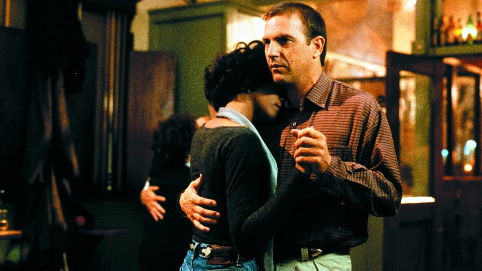
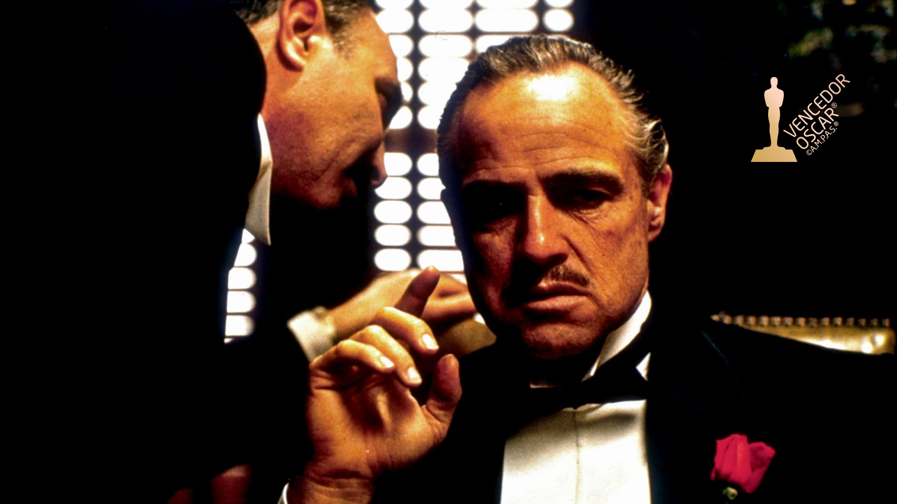
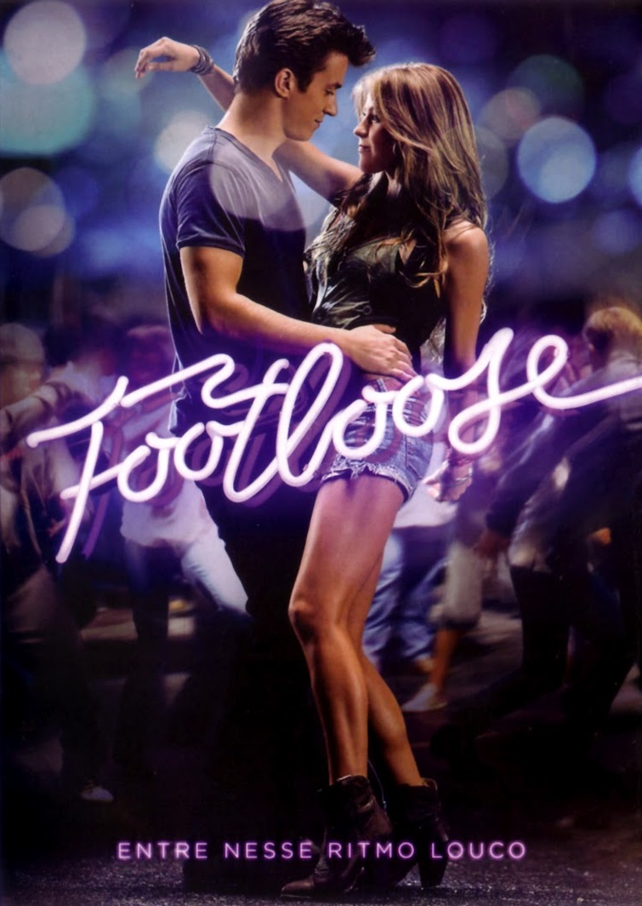

Lembra daquela música, daquele filme...
A trilha sonora de um filme pode ser tão emocionante, essencial ou memorável quanto qualquer diálogo ou performance de um ator. Uma boa trilha sonora costuma transcender o filme em que apareceu, seja ela uma faixa gravada anteriormente por um artista ou uma canção original que se torna um hit por muito tempo.
#1. O Guarda-Costas
A trilha sonora do filme que trouxe Whitney Houston como atriz principal é até hoje o 15º álbum mais vendido de todos os tempos nos EUA. Whitney deu nova vida a canções originalmente gravadas por Dolly Parton (“I Will Always Love You”) e Chaka Khan (“I’m Every Woman”). Além dessas, duras canções foram indicadas ao Oscar: “I Have Nothing” e “Run to You”.
Assista aqui: Trilha Sonora
#2. O Poderoso Chefão
O autoplágio do compositor Nino Rota, que assumiu ter utilizados traços do seu próprio trabalho em um filme de dois anos antes (Os Palhaços, de Federico Fellini) é das músicas para cinema mais icônicas da história. E, ironicamente, parece finalizar uma trilogia do próprio Rota, que, na composição para Fortunella (de Eduardo De Filippo, 1958) já dava indícios do que viria a ser seu trabalho mais inesquecível.
Assista aqui:: Trilha Sonora
#3. Footloose
Em Footloose, Ren MacCormack (Kenny Wormaid) vai morar com os tios em uma cidade do interior, após a morte da mãe. Apaixonado pela dança, ele enfrenta problemas com o reverendo Shawn Moore (Dennis Quaid), que baniu a dança da cidade devido a um grave acidente.
Assista aqui:: Trilha Sonora